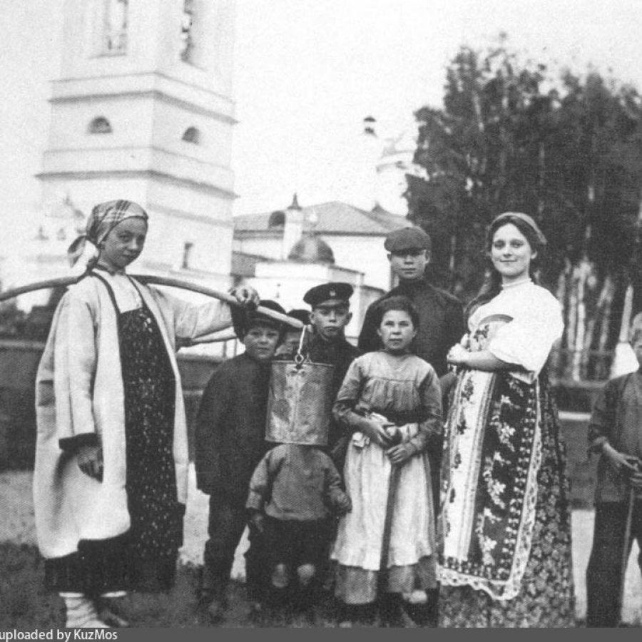
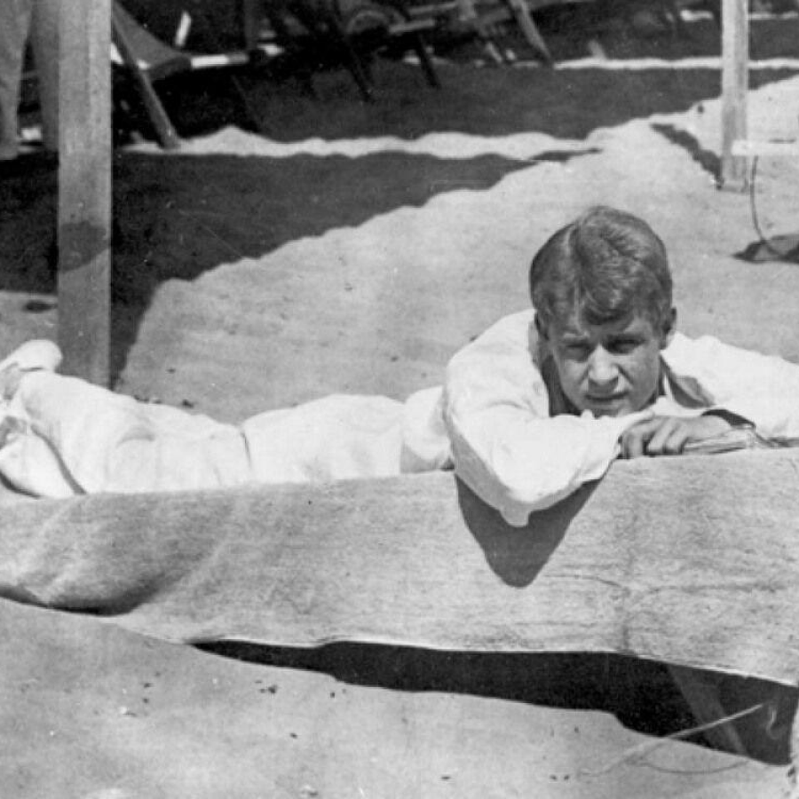
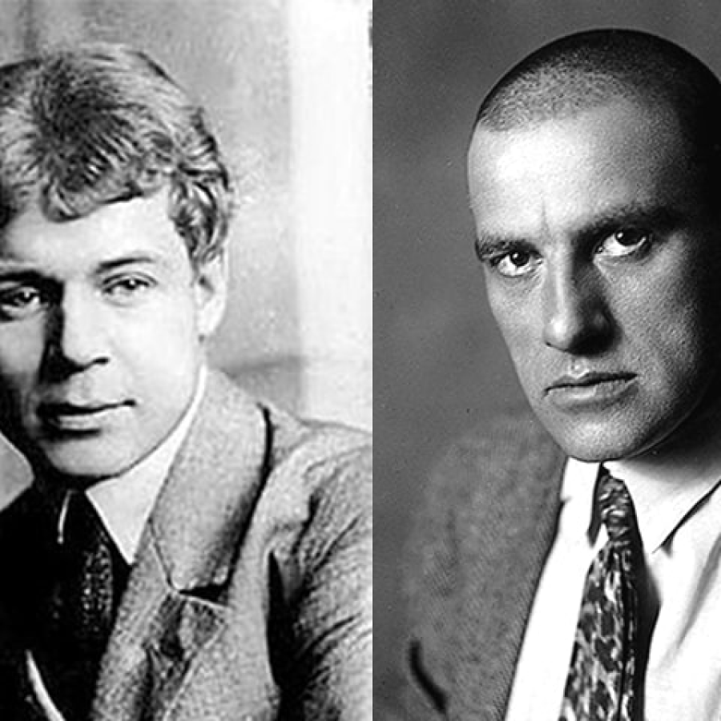
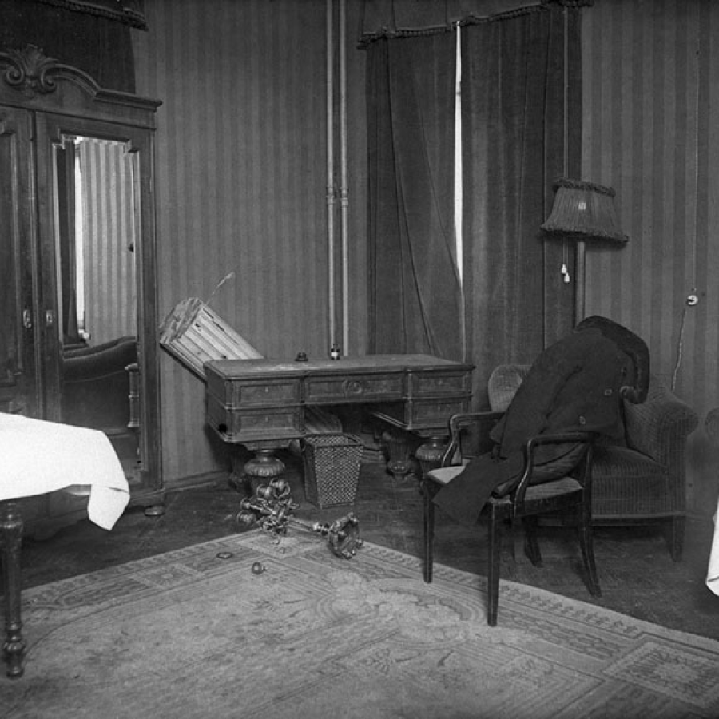
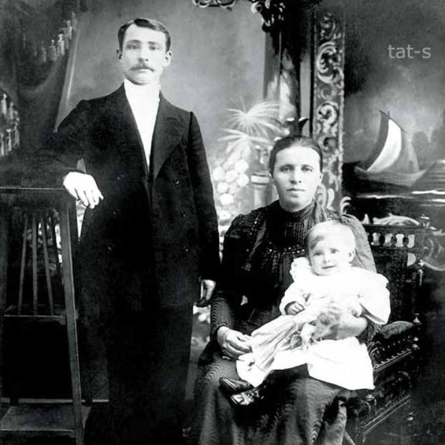

великий русский поэт, представитель новокрестьянского поэтического искусства и имажинизма в
литературе
Перед тем как ты узнаешь о самом главном в жизни и творчестве Сергея Есенина, мы хотим
предложить тебе пройти следующий тест на проверку знаний поэте (он не займет много времени, так что ты смело
можешь начать проходить его).
"Так мало пройдено дорог, Так много сделано ошибок."
Биография
Детство и образование
Родился в семье крестьянина 1895 года в с. Константиново Рязанской губернии в семье
крестьянина. Образование Есенин получил в местном земском училище(1904-1909), затем до 1912 года – в
классе церковно-приходской школы. В 1913 году поступил в городской народный университет Шанявского в
Москве.
Начало литературного пути
Впервые стихотворения Сергея Есенина были опубликованы в 1914 году. В Петрограде свои
стихи Есенин читает Александру Блоку и другим поэтам. Сближается с группой «новокрестьянских поэтов» и
увлекается этим направлением. После публикации первых сборников («Радуница»,1916 г.) поэт получил
широкую известность.
Сергей Есенин выступил как тонкий лирик, мастер глубоко психологического пейзажа, певец крестьянской
Руси, знаток народного языка и народной души.
С 1914 года Сергей Александрович печатается в детских изданиях (стихотворения «Сиротка»,1914г.,
«Побирушка»,1915г., повесть «Яр»,1916 г., «Сказка о пастушонке Пете…»,1925 г.).
К Есенину приходит настоящая популярность: его приглашают на поэтические вечера и в литературные салоны.
Максим Горький писал: «Город встретил его с тем восхищением, как обжора встречает землянику в январе.».
В 1918-1920 годах Есенин увлекается имажинизмом и выпускает сборники стихов: «Исповедь хулигана»(1921),
«Трерядница»(1921), «Стихи скандалиста»(1923), «Москва кабацкая»(1924).
Личная жизнь
После знакомства с танцовщицей Айседорой Дункан в 1921 году, Есенин вскоре женится на
ней. До этого жил с А.Р.Изрядновой (имел с ней сына Юрия), З.Н.Райх (сын Константин, дочь Татьяна),
Н.Вольпиной (сын Александр). После свадьбы с Дункан путешествовал по Европе, США. Их брак оказался
краток – в 1923 году пара распалась, и Есенин вернулся в Москву.
Последние годы жизни
В творчестве Есенина появляется острая критика (1925, «Страна негодяев»). В этом же
году в жизни Есенина выходит издание «Русь Советская».
Осенью 1925 года поэт женится на внучке Л. Толстого – Софье Андреевне. Внутренняя обеспокоенность и
давление властей послужило причиной того, что новая жена поместила Сергея в психоневрологическую
больницу.
Затем Сергей Есенин сбежал в Ленинград. А 28 декабря 1925 года наступила смерть Есенина, его тело нашли
повешенным в гостинице «Англетер».
Хронология жизни поэта
1914
В журнале для детей «Мирок» публикуется первое стихотворение поэта - «Береза».
Для этой публикации автор берет псевдоним «Аристон».
1915
Сергей меняет место жительства на Петроград, где впервые встречается с
литературным деятелем Щеколдиным, поэтами Блоком и Городецким.
1916
В 1916 году поэт отправляется на фронт. Используя связи, Есенин поступает
служить в санитарный поезд, что позволяет ему за время службы выпустить дебютный стихотворный
сборник, названный «Радуницей».
1917-1924
Есенин знакомится с поэтом Анатолием Мариенгофом и Леонидом Каннегисером.
Тогда же Сергей примкнул к обществу обществу имажинистов и выпустил несколько работ: сборник
«Исповедь хулигана» и «Трерядницу» в 1921-м, «Стихи скандалиста» в 1923-м и «Москву кабацкую» в
1924-м. В том же году будет выпущена и поэма «Пугачев».
1924
Поэт разрывает отношения с имажинистами, позже группу и вовсе распускают.
Начинают появляться газетные статьи о асоциальном поведении поэта: дебошах, пьянстве и драках.
Будет заведено несколько уголовных дел по обвинению Сергея в хулиганстве.
1924-1925
Есенин проводит время в Азербайджане, где выпускает очередной стихотворный
сборник. Возможно, что в это же время он создает «Послание евангелисту Демьяну».
Осень 1925-го
Друзья начинают беспокоиться за здоровье Есенина. Его отправляют лечиться в
психоневрологическую клинику. Вскоре Сергей самовольно прекращает лечение, собирает все вещи,
наличность и убегает в Ленинград 21 декабря.
28 декабря 1925
В ночь с 27 на 28 декабря Есенина не стало.
31 декабря 1925
Похороны на московском Ваганьковском кладбище.
"Кто любил, уж тот любить не может, Кто сгорел, того не подожжешь."
Факты

Секрет единственной фотографии Есенина с односельчанами
Хотя он никогда не отличался высоким ростом, на снимке он смотрится выше
остальных ребят. Дело в том, что с ним стояла первая красавица села и чтобы выглядеть повыше
рядом с ней, Сергей что-то подставил под ноги. Не менее интересный персонаж на фото – мальчик,
лицо которого мы вряд ли когда-либо увидим.

Как поэт раздобыл бумагу
1918 год в жизни поэта ознаменовался созданием московского издательства «Трудовая артель художников слова». А.С. Есенин являлся одним из организаторов данного издательства. В то время в Москве велся строжайший учет бумаги, но поэта это не остановило, ему очень хотелось издавать свои книги. Дав волю воображению, он переоделся в крестьянское одеяние, соответствующе причесал волосы и направился в Президиум Московского Совета. Далее, сняв шапку перед дежурным органом совета, он стал упрашивать его смилостивиться и ради всего святого выделить бумаги для крестьянских писателей.
Ради такого важного дела бумага появилась. А.С. Есенин выпустил в свет свою первую книгу стихотворений «Радуница». Его издательство просуществовало недолго, выпустив в свет всего лишь несколько книг.

Поссорился с Маяковским (не единожды)
В 20-е годы имена обоих поэтов гремели на всю страну, поэтому нет ничего удивительного в том, что между Маяковским и Есениным разгорелась нешуточная конкуренция.
Так например, Есенин говорил, что не хочет делить Россию с такими, как Маяковский, тот же отвечал: «Возьмите ее себе. Ешьте ее с хлебом». Так же Есенин относил себя к новому тогда движению «имажинистов», чьей отличительной особенностью являлось создание образов, в которых менялось традиционное значение слов. Маяковский же состоял в рядах авангардистов и футуристов, полностью перевернувших традиционное понятие стихотворной формы. Интересно, что при этом оба литератора безоговорочно признавали талант оппонента, что, впрочем, никак не мешало им едко высказываться в сторону друг друга и доводить дело чуть ли не до потасовки.
Пытался сорвать спектакль в Малом театре
К театру Есенин имел отношение весьма опосредованное, однако и там успел наделать шума. Заявившись как-то на премьеру в Малом театре в нетрезвом состоянии, поэт во время первого акта пробрался за кулисы в гримерку к одной из актрис, где в компании с другим литератором, Всеволодом Ивановым, распивал вино. Попытки юной артистки выгнать окончательно опьяневших писателей не увенчались успехом, — и администратору пришлось вызвать ненавистных Есенину милиционеров.
При виде блюстителей порядка поэт бросился удирать от них по запутанным коридорам Малого, щедро раздавая тумаки каждому, кто попадался на его пути, однако в конце концов был пойман, скручен и выдворен из театра.

Покончил с собой (или нет)
Согласно официальной версии, Сергей Есенин покончил с собой, его нашли повешенным на трубе отопления в ленинградской гостинице «Англетер». Судя по документам, признаков насильственной смерти обнаружено не было, да к тому же незадолго до своей кончины поэт написал стихотворение «До свиданья, друг мой, до свиданья», использовав для этой цели собственную кровь. Сам Есенин объяснил такой поступок отсутствием чернил.
У некоторых историков и литературоведов, однако, такой вариант развития событий вызывает сомнения: они предпочитают считать, что великий поэт был убит сотрудниками советских спецслужб. В пользу этой версии говорят множественные ссадины и гематомы на теле покойника (которые следственные органы предпочли не заметить), а также просьба поэта, обращенная к портье накануне кончины, никого не пускать в номер — ее исследователи зачастую трактуют как страх перед возможными убийцами.

Он сиротствовал при живых родителях, хотя и недолго
Человек, который всю жизнь описывал в своих стихах красоты российских земель, и сам родился в красивом месте – в старинном селе Константиново Рязанской области, которое славилось живописным расположением среди лесов и полей классического русского рельефа. Отец Есенина, Александр Никитич, происходил из крестьянской семьи, но к работе на земле никакой тяги не испытывал, слыл у себя на родине мечтателем и при первой же возможности подался в Москву, работать приказчиком в мясной лавке. Московский период его жизни начался вскоре после женитьбы на Татьяне Титовой. При этом Есенин-старший сам уехал в большой город, а молодую супругу оставил на попечении своих родителей. Когда их сыну, будущему поэту, исполнилось 2 года, Татьяна поссорилась с мужем и его родственниками и уехала работать в Рязань. Так и получилось, что Сергей остался почти сиротой при живых родителях.
Около пяти лет его воспитывали бабушка с дедушкой по материнской линии. Мама ежемесячно присылала весточку и 3 рубля на его содержание. От отца вообще ничего слышно не было. Зато дед в 5 лет научил Сергей читать, а бабушка рассказывала множество волшебных сказок. В 1904 году юная судьба Есенина совершила очередной кульбит – родители неожиданно помирились, снова сошлись, и дальше он рос в счастливой семье.
"Казаться улыбчивым и простым - самое высшее в мире искусство."
Знаменитые стихи Сергея Есенина
Друг мой, друг мой,
Я очень и очень болен.
Сам не знаю, откуда взялась эта боль.
То ли ветер свистит
Над пустым и безлюдным полем,
То ль, как рощу в сентябрь,
Осыпает мозги алкоголь.
Голова моя машет ушами,
Как крыльями птица.
Ей на шее ноги
Маячить больше невмочь.
Черный человек,
Черный, черный,
Черный человек
На кровать ко мне садится,
Черный человек
Спать не дает мне всю ночь.
Черный человек
Водит пальцем по мерзкой книге
И, гнусавя надо мной,
Как над усопшим монах,
Читает мне жизнь
Какого-то прохвоста и забулдыги,
Нагоняя на душу тоску и страх.
Черный человек,
Черный, черный!
«Слушай, слушай, —
Бормочет он мне, —
В книге много прекраснейших
Мыслей и планов.
Этот человек
Проживал в стране
Самых отвратительных
Громил и шарлатанов.
В декабре в той стране
Снег до дьявола чист,
И метели заводят
Веселые прялки.
Был человек тот авантюрист,
Но самой высокой
И лучшей марки.
Был он изящен,
К тому ж поэт,
Хоть с небольшой,
Но ухватистой силою,
И какую-то женщину,
Сорока с лишним лет,
Называл скверной девочкой
И своею милою.
Счастье, — говорил он, —
Есть ловкость ума и рук.
Все неловкие души
За несчастных всегда известны.
Это ничего,
Что много мук
Приносят изломанные
И лживые жесты.
В грозы, в бури,
В житейскую стынь,
При тяжелых утратах
И когда тебе грустно,
Казаться улыбчивым и простым —
Самое высшее в мире искусство».
«Черный человек!
Ты не смеешь этого!
Ты ведь не на службе
Живешь водолазовой.
Что мне до жизни
Скандального поэта.
Пожалуйста, другим
Читай и рассказывай».
Черный человек
Глядит на меня в упор.
И глаза покрываются
Голубой блевотой, —
Словно хочет сказать мне,
Что я жулик и вор,
Так бесстыдно и нагло
Обокравший кого-то.
........................................................................
Друг мой, друг мой,
Я очень и очень болен.
Сам не знаю, откуда взялась эта боль.
То ли ветер свистит
Над пустым и безлюдным полем,
То ль, как рощу в сентябрь,
Осыпает мозги алкоголь.
Ночь морозная.
Тих покой перекрестка.
Я один у окошка,
Ни гостя, ни друга не жду.
Вся равнина покрыта
Сыпучей и мягкой известкой,
И деревья, как всадники,
Съехались в нашем саду.
Где-то плачет
Ночная зловещая птица.
Деревянные всадники
Сеют копытливый стук.
Вот опять этот черный
На кресло мое садится,
Приподняв свой цилиндр
И откинув небрежно сюртук.
«Слушай, слушай! —
Хрипит он, смотря мне в лицо,
Сам все ближе
И ближе клонится. —
Я не видел, чтоб кто-нибудь
Из подлецов
Так ненужно и глупо
Страдал бессонницей.
Ах, положим, ошибся!
Ведь нынче луна.
Что же нужно еще
Напоенному дремой мирику?
Может, с толстыми ляжками
Тайно придет „она",
И ты будешь читать
Свою дохлую томную лирику?
Ах, люблю я поэтов!
Забавный народ.
В них всегда нахожу я
Историю, сердцу знакомую, —
Как прыщавой курсистке
Длинноволосый урод
Говорит о мирах,
Половой истекая истомою.
Не знаю, не помню,
В одном селе,
Может, в Калуге,
А может, в Рязани,
Жил мальчик
В простой крестьянской семье,
Желтоволосый,
С голубыми глазами...
И вот стал он взрослым,
К тому ж поэт,
Хоть с небольшой,
Но ухватистой силою,
И какую-то женщину,
Сорока с лишним лет,
Называл скверной девочкой
И своею милою».
«Черный человек!
Ты прескверный гость.
Эта слава давно
Про тебя разносится».
Я взбешен, разъярен,
И летит моя трость
Прямо к морде его,
В переносицу...
...........................................................................
Месяц умер,
Синеет в окошко рассвет.
Ах ты, ночь!
Что ты, ночь, наковеркала?
Я в цилиндре стою.
Никого со мной нет.
Я один...
И разбитое зеркало...
Дай, Джим, на счастье лапу мне,
Такую лапу не видал я сроду.
Давай с тобой полаем при луне
На тихую, бесшумную погоду.
Дай, Джим, на счастье лапу мне.
Пожалуйста, голубчик, не лижись.
Пойми со мной хоть самое простое.
Ведь ты не знаешь, что такое жизнь,
Не знаешь ты, что жить на свете стоит.
Хозяин твой и мил и знаменит,
И у него гостей бывает в доме много,
И каждый, улыбаясь, норовит
Тебя по шерсти бархатной потрогать.
Ты по-собачьи дьявольски красив,
С такою милою доверчивой приятцей.
И, никого ни капли не спросив,
Как пьяный друг, ты лезешь целоваться.
Мой милый Джим, среди твоих гостей
Так много всяких и невсяких было.
Но та, что всех безмолвней и грустней,
Сюда случайно вдруг не заходила?
Она придет, даю тебе поруку.
И без меня, в ее уставясь взгляд,
Ты за меня лизни ей нежно руку
За все, в чем был и не был виноват.
В этом мире я только прохожий,
Ты махни мне веселой рукой.
У осеннего месяца тоже
Свет ласкающий, тихий такой.
В первый раз я от месяца греюсь,
В первый раз от прохлады согрет,
И опять и живу и надеюсь
На любовь, которой уж нет.
Это сделала наша равнинность,
Посоленная белью песка,
И измятая чья-то невинность,
И кому-то родная тоска.
Потому и навеки не скрою,
Что любить не отдельно, не врозь,
Нам одною любовью с тобою
Эту родину привелось.
Шаганэ ты моя, Шаганэ!
Потому, что я с севера, что ли,
Я готов рассказать тебе поле,
Про волнистую рожь при луне.
Шаганэ ты моя, Шаганэ.
Потому, что я с севера, что ли,
Что луна там огромней в сто раз,
Как бы ни был красив Шираз,
Он не лучше рязанских раздолий.
Потому, что я с севера, что ли.
Я готов рассказать тебе поле,
Эти волосы взял я у ржи,
Если хочешь, на палец вяжи —
Я нисколько не чувствую боли.
Я готов рассказать тебе поле.
Про волнистую рожь при луне
По кудрям ты моим догадайся.
Дорогая, шути, улыбайся,
Не буди только память во мне
Про волнистую рожь при луне.
Шаганэ ты моя, Шаганэ!
Там, на севере, девушка тоже,
На тебя она страшно похожа,
Может, думает обо мне…
Шаганэ ты моя, Шаганэ.
Отговорила роща золотая
Березовым, веселым языком,
И журавли, печально пролетая,
Уж не жалеют больше ни о ком.
Кого жалеть? Ведь каждый в мире странник —
Пройдет, зайдет и вновь оставит дом.
О всех ушедших грезит коноплянник
С широким месяцем над голубым прудом.
Стою один среди равнины голой,
А журавлей относит ветер в даль,
Я полон дум о юности веселой,
Но ничего в прошедшем мне не жаль.
Не жаль мне лет, растраченных напрасно,
Не жаль души сиреневую цветь.
В саду горит костер рябины красной,
Но никого не может он согреть.
Не обгорят рябиновые кисти,
От желтизны не пропадет трава.
Как дерево роняет тихо листья,
Так я роняю грустные слова.
И если время, ветром разметая,
Сгребет их все в один ненужный ком…
Скажите так… что роща золотая
Отговорила милым языком.
Заметался пожар голубой,
Позабылись родимые дали.
В первый раз я запел про любовь,
В первый раз отрекаюсь скандалить.
Был я весь как запущенный сад,
Был на женщин и зелие падкий.
Разонравилось пить и плясать
И терять свою жизнь без оглядки.
Мне бы только смотреть на тебя,
Видеть глаз златокарий омут,
И чтоб, прошлое не любя,
Ты уйти не смогла к другому.
Поступь нежная, легкий стан,
Если б знала ты сердцем упорным,
Как умеет любить хулиган,
Как умеет он быть покорным.
Я б навеки забыл кабаки
И стихи бы писать забросил,
Только б тонко касаться руки
И волос твоих цветом в осень.
Я б навеки пошел за тобой
Хоть в свои, хоть в чужие дали…
В первый раз я запел про любовь,
В первый раз отрекаюсь скандалить.
Я обманывать себя не стану,
Залегла забота в сердце мглистом.
Отчего прослыл я шарлатаном?
Отчего прослыл я скандалистом?
Не злодей я и не грабил лесом,
Не расстреливал несчастных по темницам.
Я всего лишь уличный повеса,
Улыбающийся встречным лицам.
Я московский озорной гуляка.
По всему тверскому околотку
В переулках каждая собака
Знает мою легкую походку.
Каждая задрипанная лошадь
Головой кивает мне навстречу.
Для зверей приятель я хороший,
Каждый стих мой душу зверя лечит.
Я хожу в цилиндре не для женщин -
В глупой страсти сердце жить не в силе, -
В нем удобней, грусть свою уменьшив,
Золото овса давать кобыле.
Средь людей я дружбы не имею,
Я иному покорился царству.
Каждому здесь кобелю на шею
Я готов отдать мой лучший галстук.
И теперь уж я болеть не стану.
Прояснилась омуть в сердце мглистом.
Оттого прослыл я шарлатаном,
Оттого прослыл я скандалистом.
Да! Теперь — решено. Без возврата
Я покинул родные поля.
Уж не будут листвою крылатой
Надо мною звенеть тополя.
Низкий дом без меня ссутулится,
Старый пёс мой давно издох.
На московских изогнутых улицах
Умереть, знать, судил мне Бог.
Я люблю этот город вязевый,
Пусть обрюзг он и пусть одрях.
Золотая дремотная Азия
Опочила на куполах.
А когда ночью светит месяц,
Когда светит… чёрт знает как!
Я иду, головою свесясь,
Переулком в знакомый кабак.
Шум и гам в этом логове жутком,
Но всю ночь напролёт, до зари,
Я читаю стихи проституткам
И с бандитами жарю спирт.
Сердце бьётся всё чаще и чаще,
И уж я говорю невпопад:
— Я такой же, как вы, пропащий,
Мне теперь не уйти назад.
Низкий дом без меня ссутулится,
Старый пёс мой давно издох.
На московских изогнутых улицах
Умереть, знать, судил мне Бог.
Гой ты, Русь, моя родная,
Хаты — в ризах образа...
Не видать конца и края —
Только синь сосет глаза.
Как захожий богомолец,
Я смотрю твои поля.
А у низеньких околиц
Звонно чахнут тополя.
Пахнет яблоком и медом
По церквам твой кроткий Спас.
И гудит за корогодом
На лугах веселый пляс.
Побегу по мятой стежке
На приволь зеленых лех,
Мне навстречу, как сережки,
Прозвенит девичий смех.
Если крикнет рать святая:
«Кинь ты Русь, живи в раю!»
Я скажу: «Не надо рая,
Дайте родину мою».
Творчество Сергея Есенина - одна из ярких, глубоко волнующих страниц истории советской
литературы. Эпоха Есенина отошла в прошлое, но его поэзия продолжает жить, пробуждая у каждого чувство любви
к родимому краю, ко всему близкому и разному. Он никогда не отделял свою судьбу от судьбы Родины. И лучше
всего жизненная позиция великого Мастера выражена в следующих строках:
Если крикнет рать святая:
"Кинь ты Русь, живи в раю!".
Я скажу: "Не надо рая,
Дайте родину мою".